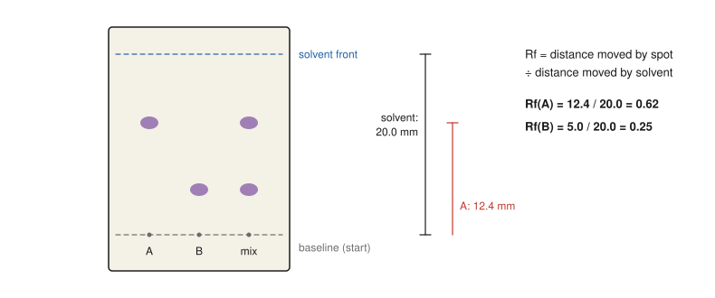

Chapter 16: Laboratory Safety and Green Chemistry¶
Working safely, and making chemistry cleaner
Organic chemistry is an experimental science. Every reaction in this book was first carried out by someone at a bench, and every structure was confirmed by experiment. Laboratory work brings real hazards: most organic solvents burn, many reagents are corrosive or toxic, and some reactions release heat or gas quickly. Good practice reduces these risks to a very low level. The same habits of thought that make a laboratory safe, asking what could go wrong and how to prevent it, also underlie green chemistry, the effort to design chemical processes that produce less waste, use less hazardous materials and consume less energy. This chapter covers the principles of safe practice, the standard techniques of a teaching laboratory, the measurement of purity and yield, and the principles and metrics of green chemistry.
Learning outcomes
By the end of this chapter you should be able to:
- explain the difference between a hazard and a risk, and outline a risk assessment;
- interpret hazard pictograms and safety data sheets, and choose appropriate protective measures;
- describe the purpose and safe use of the common techniques: heating under reflux, distillation, extraction, drying, recrystallisation, filtration, melting-point determination and thin-layer chromatography;
- dispose of organic waste correctly;
- calculate percentage yield, atom economy and E-factor, and distinguish them;
- state the twelve principles of green chemistry and apply them to compare processes.
16.1 Hazard, risk and risk assessment¶
Two words are often confused:
- A hazard is something with the potential to cause harm: a flammable liquid, a corrosive acid, a toxic gas, a hot surface.
- A risk is the likelihood that harm will actually occur, combined with how severe it would be, in a particular situation.
Ethoxyethane is always a hazard (it is extremely flammable). The risk of using it depends on how much is used, whether there are flames or hot surfaces nearby, and whether the work is done in a fume cupboard. Good practice cannot remove hazards, but it can reduce risks to an acceptable level.
Before any practical work, a risk assessment is made, normally by the person in charge and read by everyone who does the experiment. It:
- lists every substance used and produced, and every operation (heating, distilling, filtering under vacuum);
- identifies the hazards of each, from the supplier's safety data sheet (SDS);
- assesses the risks in the planned procedure;
- sets out control measures: using smaller quantities or a less hazardous substitute, working in a fume cupboard, wearing protective equipment;
- states what to do in an emergency: spills, fires, splashes on skin or in eyes, and how to dispose of waste.
The most effective controls come first: eliminate the hazard if possible, substitute something less hazardous, use engineering controls (fume cupboards, safety screens), then procedures (training, supervision, small scale), and only lastly personal protective equipment, the last line of defence.
Basic rules of the teaching laboratory¶
- Wear safety spectacles or goggles at all times, and a laboratory coat, fastened. Wear suitable gloves when handling corrosive or toxic substances, chosen for the chemicals in use, and remove them before touching door handles, phones or your face.
- Never eat, drink or apply cosmetics in the laboratory. Never smell chemicals directly or pipette by mouth.
- Work in a fume cupboard with volatile, toxic or smelly substances, and keep the sash low.
- Know where the eyewash station, safety shower, fire extinguishers, fire blanket and exits are, and how to use them.
- Keep flammable solvents away from flames and hot plates. Many organic solvents have vapours denser than air that can travel along a bench to an ignition source.
- Label every container with its contents and the main hazard. Never return unused reagent to the stock bottle.
- Never heat a closed system; pressure can build up until the apparatus bursts.
- Report every accident, spill and breakage, however small. Never work alone.
16.2 Hazard information¶
Chemicals are classified and labelled internationally under the Globally Harmonised System (GHS). Each label carries pictograms (a black symbol in a red-bordered diamond), a signal word ("Danger" or "Warning"), hazard statements and precautionary statements. The pictograms are:
| Pictogram | Meaning | Organic laboratory examples |
|---|---|---|
| flame | flammable | ethanol, propanone, hexane, ethoxyethane |
| flame over circle | oxidising | potassium manganate(VII), hydrogen peroxide (concentrated) |
| exploding bomb | explosive or self-reactive | dry diazonium salts, organic peroxides |
| corrosion | corrosive to skin, eyes or metals | concentrated acids, sodium hydroxide, ethanoyl chloride |
| skull and crossbones | acutely toxic | methanol (in quantity), bromine, cyanides |
| exclamation mark | harmful or irritant | many dilute solutions, many organic solids |
| health hazard (silhouette) | long-term health hazard: carcinogen, mutagen, reproductive toxin, respiratory sensitiser | dichloromethane (suspected carcinogen), chromium(VI) compounds |
| gas cylinder | gas under pressure | nitrogen, carbon dioxide cylinders |
| environment | hazardous to aquatic life | many halogenated organic compounds |
Table 16.1. GHS hazard pictograms.
The safety data sheet for each substance gives fuller information: physical properties, flash point, exposure limits, first-aid measures, fire-fighting measures, safe storage, and disposal. Reading it is part of planning any experiment.
Caution: solvent flammability
The flash point of a liquid is the lowest temperature at which its vapour can be ignited in air. Ethoxyethane, pentane, hexane and propanone have flash points well below room temperature, so their vapours can ignite at any time if a source of ignition is present. Heat flammable solvents only with a water bath, a heating mantle or a hot plate, never with a naked flame, and in small quantities.
16.3 Standard techniques¶
Most organic preparations follow the same pattern: carry out the reaction, separate the crude product from the mixture, purify it, and check its identity and purity.
flowchart LR
R[Reaction: heat under reflux] --> W[Work-up: extract, wash, dry]
W --> P[Purify: distil or recrystallise]
P --> A[Analyse: melting or boiling point, TLC, spectra]
A --> Y[Calculate percentage yield]
Heating under reflux¶
Many organic reactions are slow at room temperature and must be heated for some time. If an open flask were heated, the volatile solvent and reactants would boil away. In heating under reflux, a vertical condenser with cold water flowing through its jacket (in at the bottom, out at the top) is fitted to the flask. Vapour rises into the condenser, condenses and runs back into the flask, so the mixture can be kept boiling at the solvent's boiling point indefinitely without loss. The top of the condenser is left open to the air. Anti-bumping granules are added before heating to promote smooth boiling.
Distillation¶
Simple distillation separates a volatile liquid from non-volatile substances, or from liquids whose boiling points differ by more than about 25 °C. The vapour passes through a sloping condenser and is collected as the distillate; a thermometer with its bulb level with the side arm measures the temperature of the vapour. Fractional distillation, with a column packed with glass between the flask and the condenser, separates liquids with closer boiling points: the vapour condenses and re-evaporates many times on the way up the column, becoming richer in the more volatile component. Distillation is used, for example, to collect an aldehyde as it forms (Section 10.5) and to collect cyclohexene from the dehydration of cyclohexanol (Section 10.4).
Liquid–liquid extraction¶
A separating funnel is used to separate two immiscible liquids, usually water and an organic solvent. A compound distributes itself between the two layers according to its relative solubility. Acids and bases can be moved between layers by changing the pH (Sections 4.6 and 13.3). When shaking a separating funnel, invert it and open the tap frequently to release pressure, especially when a volatile solvent is used or when sodium hydrogencarbonate solution, which releases CO₂, is present. The organic layer is often washed with water, dilute acid or base, or saturated sodium chloride solution to remove impurities.
Drying¶
Organic liquids and solutions that have been in contact with water are dried by swirling with an anhydrous inorganic salt that takes up water to form a hydrate: anhydrous magnesium sulfate, sodium sulfate or calcium chloride. Enough drying agent has been added when some of it remains free-flowing rather than clumped. The drying agent is then removed by filtration or decanting.
Recrystallisation¶
Recrystallisation purifies a solid. The impure solid is dissolved in the minimum volume of hot solvent, a solvent in which the compound is very soluble when hot but much less soluble when cold, and in which the impurities either are very soluble (and stay in solution) or are insoluble (and can be filtered off hot). The solution is cooled slowly; crystals of the pure compound form, are collected by suction filtration with a Büchner or Hirsch funnel, washed with a little ice-cold solvent and dried. Some product always remains in the solution, so recrystallisation trades yield for purity.
Melting point and boiling point¶
A pure crystalline solid melts sharply, over a range of 1 to 2 °C, at a characteristic temperature. Impurities lower and broaden the melting range. Comparing the melting point of a product with the literature value is a quick test of identity and purity. A mixed melting point helps confirm identity: if a sample is mixed with an authentic sample of the compound it is thought to be and the melting point does not fall, the two are very probably identical. For liquids, the boiling point measured during distillation serves a similar purpose, though less sensitively.
Thin-layer chromatography¶
Thin-layer chromatography (TLC) separates the components of a mixture on a plate coated with a thin layer of a polar solid, usually silica gel (the stationary phase). A small spot of the sample is placed on a baseline drawn in pencil near the bottom, and the plate is stood in a covered jar containing a shallow layer of solvent (the mobile phase), below the baseline. The solvent rises up the plate by capillary action, carrying the components at different rates: less polar compounds, held less strongly by the polar silica, move further. When the solvent front is near the top, the plate is removed, the front is marked, and the spots are made visible, for example under ultraviolet light or with iodine vapour.
Each spot is described by its retention factor, \(R_\mathrm{f}\):

TLC is quick and needs only a tiny sample. It is used to follow the progress of a reaction (the spot of the starting material fades as a new spot for the product appears), to check the purity of a product (a pure compound gives one spot) and to choose the solvent for larger-scale column chromatography, which uses the same principle to separate gram quantities.
16.4 Waste disposal¶
Organic waste must never be poured down the sink. Typical arrangements are:
- non-halogenated organic solvents (ethanol, propanone, hexane, ethyl ethanoate) collected in one labelled container;
- halogenated solvents (dichloromethane, trichloromethane) collected separately, because they need different treatment;
- heavy-metal waste (chromium, mercury, silver compounds) collected separately;
- reactive residues (such as small amounts of sodium metal or LiAlH₄) destroyed by an approved, supervised procedure before disposal;
- broken glass in a dedicated container.
The volume and hazard of the waste produced by an experiment is itself a measure of how "green" the experiment is, which leads to the second half of this chapter.
16.5 Yield and atom economy¶
Percentage yield¶
The theoretical yield is the amount of product that would form if the limiting reactant reacted completely according to the balanced equation. The percentage yield compares the amount actually obtained with that:
Yields below 100% result from incomplete reactions (including equilibria), side reactions, and losses during transfer and purification.
Atom economy¶
A reaction can have a 100% yield and still produce a great deal of waste, if the by-products are heavy. Atom economy measures how much of the mass of the reactants ends up in the desired product, assuming a 100% yield:
using the stoichiometric amounts from the balanced equation.
- Addition reactions have an atom economy of 100%: every atom of the reactants is in the product. The hydration of ethene, C₂H₄ + H₂O → C₂H₅OH, is an example.
- Substitution and elimination reactions always produce a by-product and have lower atom economies. Making ethanol from bromoethane, C₂H₅Br + NaOH → C₂H₅OH + NaBr, has an atom economy of only about 31%, because most of the mass of the reactants ends up in sodium bromide.
These calculations are easily automated. The following short Python function computes molar masses from simple formulas and then the atom economy:
import re
MASSES = {"C": 12.011, "H": 1.008, "O": 15.999, "N": 14.007,
"Na": 22.990, "Cl": 35.45, "Br": 79.904}
def molar_mass(formula):
"""Molar mass of a simple formula such as 'C2H5Br' (no brackets)."""
total = 0.0
for symbol, count in re.findall(r"([A-Z][a-z]?)(\d*)", formula):
total += MASSES[symbol] * (int(count) if count else 1)
return total
def atom_economy(reactants, product):
"""Percentage of the reactants' mass that ends up in the desired product."""
return 100 * molar_mass(product) / sum(molar_mass(r) for r in reactants)
print(round(atom_economy(["C2H4", "H2O"], "C2H6O"), 1)) # hydration of ethene
print(round(atom_economy(["C2H5Br", "NaOH"], "C2H6O"), 1)) # substitution
print(round(atom_economy(["C7H6O3", "C4H6O3"], "C9H8O4"), 1)) # aspirin
100.0
30.9
75.0
Example 16.1: Yield and atom economy for aspirin
Aspirin is made from 2-hydroxybenzoic acid (C₇H₆O₃, Mr 138.1) and ethanoic anhydride (C₄H₆O₃, Mr 102.1); the by-product is ethanoic acid:
C₇H₆O₃ + C₄H₆O₃ → C₉H₈O₄ (aspirin, Mr 180.2) + C₂H₄O₂ (Mr 60.1)
Atom economy = 180.2 / (138.1 + 102.1) × 100 = 75.0%.
A student uses 2.00 g of 2-hydroxybenzoic acid (the limiting reactant) and obtains 1.95 g of pure aspirin. Theoretical yield = 2.00 × 180.2 / 138.1 = 2.61 g. Percentage yield = 1.95 / 2.61 × 100 = 74.7%.
The two numbers measure different things. The yield tells you how well the experiment went; the atom economy tells you how wasteful the chosen reaction is, however well it is carried out. The by-product here, ethanoic acid, is at least useful and not very hazardous.
The E-factor¶
Atom economy considers only the balanced equation. The E-factor, introduced by Roger Sheldon, measures the actual waste produced:
Waste includes by-products, unreacted starting materials, solvent losses and spent reagents and catalysts. An ideal process has an E-factor of zero. Bulk chemical manufacture typically achieves E-factors well below 5, whereas the multistep synthesis of fine chemicals and pharmaceuticals has historically produced tens to hundreds of kilograms of waste per kilogram of product, much of it solvent.
16.6 The principles of green chemistry¶
Green chemistry is the design of chemical products and processes that reduce or eliminate the use and generation of hazardous substances. Its principles were set out as twelve points by Paul Anastas and John Warner in their book Green Chemistry: Theory and Practice (1998). In paraphrase:
- Prevent waste rather than treat or clean it up afterwards.
- Maximise atom economy: design syntheses so that as much as possible of the starting materials ends up in the product.
- Use and generate less hazardous substances wherever practicable.
- Design safer chemicals: products should do their job with as little toxicity as possible.
- Use safer solvents and auxiliaries, or avoid them.
- Design for energy efficiency: run reactions at ambient temperature and pressure where possible.
- Use renewable feedstocks rather than depleting ones.
- Reduce derivatives: avoid unnecessary protecting groups and temporary modifications, which add steps and waste.
- Use catalysts in preference to stoichiometric reagents.
- Design for degradation: products should break down into harmless substances after use.
- Analyse in real time to monitor and control processes and prevent the formation of pollutants.
- Choose inherently safer chemistry to minimise the potential for accidents, explosions and fires.
Green chemistry in practice¶
Many examples in this book can be seen through these principles.
- Catalysis and atom economy. Catalytic hydrogenation (Section 7.6) adds H₂ with 100% atom economy and a reusable catalyst, while reductions with stoichiometric metal hydrides produce inorganic waste. A well-known industrial example is the manufacture of the painkiller ibuprofen: an older six-step route had an atom economy of about 40%, while a three-step catalytic route introduced in the 1990s raised it to about 77%, with most of the remainder recoverable as ethanoic acid.
- Safer oxidants. Chromium(VI) oxidations of alcohols (Section 10.5) generate toxic heavy-metal waste; catalytic oxidations using air or hydrogen peroxide produce only water as the by-product.
- Safer solvents. Benzene and tetrachloromethane, once common solvents, are now avoided because of their toxicity. Water, ethanol, ethyl ethanoate and supercritical carbon dioxide (used, for example, to decaffeinate coffee) are greener choices. Pharmaceutical companies publish solvent-selection guides that rank solvents by safety, health and environmental impact.
- Renewable feedstocks. Ethanol from fermentation (Section 10.2) and poly(lactic acid) from plant sugars (Section 15.3) are made from renewable resources rather than petroleum.
- Design for degradation. Biodegradable polyesters, and detergents with unbranched chains that bacteria can break down, are designed with their end of life in mind. The persistence of CFCs (Section 9.1) shows the cost of ignoring this principle.
- Biocatalysis. Enzymes work in water at room temperature, are highly selective (often producing a single enantiomer, Section 3.5) and are themselves biodegradable.
Key idea
Safety and sustainability are two sides of the same habit: thinking in advance about what each substance and each step will do, not only in the flask but before and after it. The best hazard is the one that is never used, and the best waste is the waste that is never made.
16.7 Summary¶
Summary
- A hazard can cause harm; a risk is the likelihood and severity of harm in a given situation. A risk assessment identifies hazards and sets control measures, in order: eliminate, substitute, engineer, procedure, protect.
- Always wear eye protection and a lab coat, use fume cupboards for volatile and toxic substances, keep flammable solvents away from ignition sources and never heat a closed system.
- GHS pictograms and safety data sheets give hazard information.
- Standard techniques: reflux (heating without loss), distillation, extraction (vent the funnel), drying with anhydrous salts, recrystallisation, filtration, melting point (sharp if pure), TLC (\(R_\mathrm{f}\)).
- Organic waste is collected by type, never poured down the sink.
- Percentage yield measures experimental success; atom economy measures how much of the reactants can end up in the product; the E-factor measures actual waste.
- The twelve principles of green chemistry aim to prevent waste, use safer substances and solvents, save energy, use renewable feedstocks and catalysts, and design products that degrade.
16.8 Exercises¶
Exercise 1
Explain the difference between a hazard and a risk, using concentrated sulfuric acid as an example.
Answer
Concentrated sulfuric acid is a hazard because it is highly corrosive to skin and eyes and reacts exothermically with water. The risk depends on the situation: transferring a few drops with a dropping pipette while wearing goggles and gloves, with water and a spill kit to hand, is a low risk; pouring a large volume from a heavy bottle without eye protection, or adding water to the acid rather than acid to water, is a high risk.
Exercise 2
Why is a condenser for heating under reflux left open at the top, and why are anti-bumping granules added?
Answer
The apparatus must not be a closed system: as the mixture is heated, the gas inside expands and vapour is produced, and a sealed apparatus could build up pressure and burst. The open top lets the pressure stay at atmospheric while the condenser returns the vapour to the flask. Anti-bumping granules provide sites for bubbles to form, so the liquid boils smoothly instead of superheating and then boiling violently ("bumping").
Exercise 3
A crude solid melts over the range 118 to 124 °C. After recrystallisation it melts at 132 to 133 °C. Explain these observations.
Answer
Impurities lower and broaden the melting range, so the crude product melts over a wide range below its true melting point. After recrystallisation, which removes most of the impurities, it melts sharply at a higher temperature (close to the literature value), indicating a much purer product.
Exercise 4
On a TLC plate the solvent front has moved 6.0 cm. Spot X has moved 4.5 cm and spot Y 1.5 cm. (a) Calculate the \(R_\mathrm{f}\) of each. (b) Which compound is less polar, assuming a silica plate? (c) Why is the baseline drawn in pencil, not ink?
Answer
(a) X: 4.5/6.0 = 0.75; Y: 1.5/6.0 = 0.25. (b) X: it is held less strongly by the polar silica and travels further. (c) Ink contains dyes that would dissolve in the solvent and move up the plate as extra spots; graphite does not.
Exercise 5
Calculate the atom economy for making 1-bromobutane from butan-1-ol and hydrogen bromide: C₄H₉OH + HBr → C₄H₉Br + H₂O. (Mr: C₄H₉OH 74.1, HBr 80.9, C₄H₉Br 137.0.) Then calculate the percentage yield if 7.4 g of butan-1-ol gives 9.6 g of 1-bromobutane.
Answer
Atom economy = 137.0 / (74.1 + 80.9) × 100 = 137.0/155.0 × 100 = 88.4%.
Moles of butan-1-ol = 7.4/74.1 = 0.0999 mol. Theoretical yield = 0.0999 × 137.0 = 13.7 g. Percentage yield = 9.6/13.7 × 100 = 70%.
Exercise 6
Two routes to ethanol are (A) hydration of ethene with steam over a phosphoric acid catalyst and (B) fermentation of glucose: C₆H₁₂O₆ → 2 C₂H₅OH + 2 CO₂. Calculate the atom economy of each and discuss which is "greener", considering more than atom economy.
Answer
(A) 100%: C₂H₄ + H₂O → C₂H₅OH.
(B) 2 × 46.07 / 180.16 × 100 = 51.1%; the rest of the mass leaves as CO₂.
On atom economy alone, route A is better. But route A uses ethene from petroleum (a non-renewable feedstock) and needs high temperature and pressure (energy), whereas route B uses a renewable feedstock at moderate temperature with a biological catalyst, and the CO₂ released was recently taken from the air by the plants. Route B, however, produces dilute ethanol that must be concentrated by energy-intensive distillation, and growing the crops uses land and water. A full comparison needs a life-cycle assessment; atom economy is only one of the twelve principles.
Exercise 7
For each change, say which green chemistry principle it illustrates: (a) replacing a dichromate oxidation with a catalytic oxidation using air; (b) replacing dichloromethane with ethyl ethanoate as an extraction solvent; (c) avoiding a protecting group by using a more selective reagent; (d) designing a polymer that bacteria can hydrolyse.
Answer
(a) Use catalysts rather than stoichiometric reagents, and use less hazardous substances (no chromium waste). (b) Use safer solvents. (c) Reduce derivatives (fewer steps, less waste). (d) Design for degradation.
16.9 Quiz¶
Check your understanding of safety and green chemistry
Exercise 1
Which is the most effective way of controlling a risk?
- wearing gloves
- eliminating or substituting the hazard
- putting up a warning sign
- working quickly
Answer
eliminating or substituting the hazard
Exercise 2
Why must a separating funnel be vented while shaking?
- to let air in so the liquid drains
- to release pressure from solvent vapour or gas
- to cool the mixture
- to mix the layers better
Answer
to release pressure from solvent vapour or gas
Exercise 3
An impure solid compared with the pure compound melts
- at a higher temperature over a narrow range
- at a lower temperature over a wider range
- at exactly the same temperature
- not at all
Answer
at a lower temperature over a wider range
Exercise 4
On a TLC plate a spot moves 3.0 cm while the solvent moves 6.0 cm. What is its Rf?
Answer
0.5 / 0.50 / 1/2
Exercise 5
Which type of reaction always has 100% atom economy?
- substitution
- elimination
- addition
- condensation
Answer
addition
Exercise 6
The E-factor of a process is
- mass of waste divided by mass of product
- mass of product divided by mass of reactants
- the percentage yield
- the energy used per kilogram
Answer
mass of waste divided by mass of product
Exercise 7
Using an enzyme in water at room temperature instead of a metal reagent in an organic solvent best illustrates
- design for degradation only
- catalysis with safer solvents and energy efficiency
- real-time analysis
- reducing derivatives
Answer
catalysis with safer solvents and energy efficiency